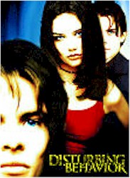
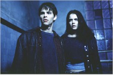

Contents | Features | Reviews | News | Archives | Store |
 |
|
| Movie Credits | Buy It! |
Disturbing Behavior
Review by Elias Savada
Posted 24 July 1998
|  | Directed by David
Nutter. Starring James Marsden, Katie Holmes, Written by Scott Rosenberg. |
If you’re waiting for a real good horror film ... linger a little longer and bypass the boring and predictable Disturbing Behavior. You might want to instead hold your breath for Halloween: H20 with Jamie Lee Curtis, back as Laurie Strode, opening August 5th. Meanwhile, this week we have the directorial debut film of X-Files’ David Nutter in an effort worthy of his small screen origins. So wait for it to pop up on video shelves in your local Blockbuster before heading into the theater and spending big bucks on a film more suitably titled Disappointingly Bad.
Scriptwriter Scott Rosenberg may have scored well with the 1997 hit Con Air, but he was also responsible for the dreadful Things To Do in Denver When You’re Dead. In the up and down world of success, this one runs cold, as it does for producers Jon Shestack and Armyan Bernstein, who will only see a fraction of the box-office dollars made on their Air Force One (1997). Helmer Nutter brought along from his TV series the director of photography John Bartley and composer Mark Snow. Snow’s score is especially unsatisfactory in lieu of his fine work on the wide screen version of The X-Files. Group effort. Group blame. Group dud.
The thin storyline combines elements from 1975’s The Stepford Wives with The Invasion of the Body Snatchers. Toss in a mad scientist and a flock of gullible parents stocking a seemingly bucolic shoreline community lapping up to the waters of the Puget Sound. This town on the fictious Crescent Island plays like a big screen sendup of Beverly Hills 90210. Let’s call it Cradle Bay 98210. The characters are as one-dimensional (if that much) as their boob tube cousins and act (or react) accordingly. Please, don’t waste your time or money. This movie is extremely close in badness to Species II, which was also brought to you by distributor Metro-Goldwyn-Mayer. MGM’s mid-year share of the boxoffice stood at 4.6% (9th place) and with films like Disturbing Behavior and Dirty Work, don’t look for any jump in their standing anytime soon.
In our idyllic town resides a school system filled with motor jocks, micro-geeks, skaters, space cadets, and the Blue Ribbons, this last a broodish coterie of super achieving teenagers that hang out at the local yogurt shoppe and seem to be particularly influenced by one Dr. Caldicott (a mustachioed Bruce Greenwood), a neuro-pharmacologist who has extracurricular reasons to be the school counselor. Seems he has been experimenting these last two years on numerous unruly teenies, who have amazing recuperative powers considering the delicate nature of the good, er, bad, doctor’s incisive incursions and mind control procedures on the topmost parts of the student bodies. Sinister Dr. C is, unfortunately, still in beta testing on his implant technology and some of the upperclassmen start short circuiting in brutal and fatal (and did I mention laughable) ways. One particularly shabby sequence involves Caldicott’s psychiatric facility, where the hero and heroine walk right in and step right down (I heard that in a song once) amongst the lunatics, apparently subjects of earlier research projects gone bad. Dimly lit corridors, creaking doors, spooky patients. Groan. Big Groan!
The cast reminded me of one of the several interchangeable young twenty-something TV dramas that populate today’s airwaves. Female lead Katie Holmes (as black leather-clad bad girl Rachel) does indeed hail from Dawson’s Creek, but the other roles are filled with such up-and-comers James Marsden (pretty face Steve Clark, just in from Chicago), Nick Stahl (drugged-out outcast Gavin), who made an impressionable debut opposite Mel Gibson in 1993’s The Man Without a Face, and Chad E. Donella as the pigmentally-challenged U.V. Poor Steve Railsback (outstanding in 1980’s The Stunt Man) is reduced to basically a walk-on role as a cop on the wrong side of the law. At least I can rejoice that William Sadler makes a short but sweet showing as Dorian Newberry, the disheveled ass-picking, pest-obsessive janitor at the local high school. It’s not as strong or funny role as his Grim Reaper in Bill & Ted’s Bogus Journey (1991) or his tragicomic inmate Haywood in 1994’s enjoyable The Shawshank Redemption, but it’ll do in a pinch.
As for the rest of the film, it’s shameful, especially – based on the Carriesque ending – the threat of even contemplating unleashing to the public a sequel to this inbred disaster.
Contents | Features | Reviews | News | Archives | Store
Copyright © 1999 by Nitrate Productions, Inc. All Rights Reserved.